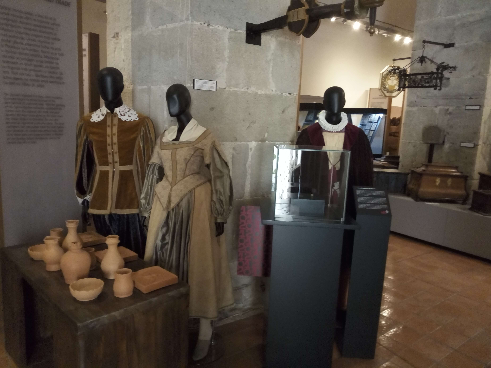

Maribor, Slovenia
Slovenia · Styria
Maribor, Slovenia's second-largest city, is a charming destination
known for its relaxed atmosphere, historic streets and beautiful
natural surroundings. Situated along the Drava River and surrounded
by green hills and vineyards, the city offers a pleasant blend of
urban life and nature. Its picturesque city views, cultural heritage
and nearby natural landscapes make Maribor an enjoyable place to
explore. The city is also known for its historic architecture,
welcoming atmosphere and strong connection to the surrounding
wine-growing region. Its museums and cultural landmarks offer
visitors an opportunity to discover more about the history and
traditions of this part of Slovenia. During my visit, I enjoyed
discovering the character of this Slovenian city and capturing
some of its everyday beauty.


National Park
Explore my personal photographs of the natural surroundings of Maribor.
Explore Photos ↗
Regional Museum
Explore my personal photographs of Maribor Regional Museum.
Explore Photos ↗